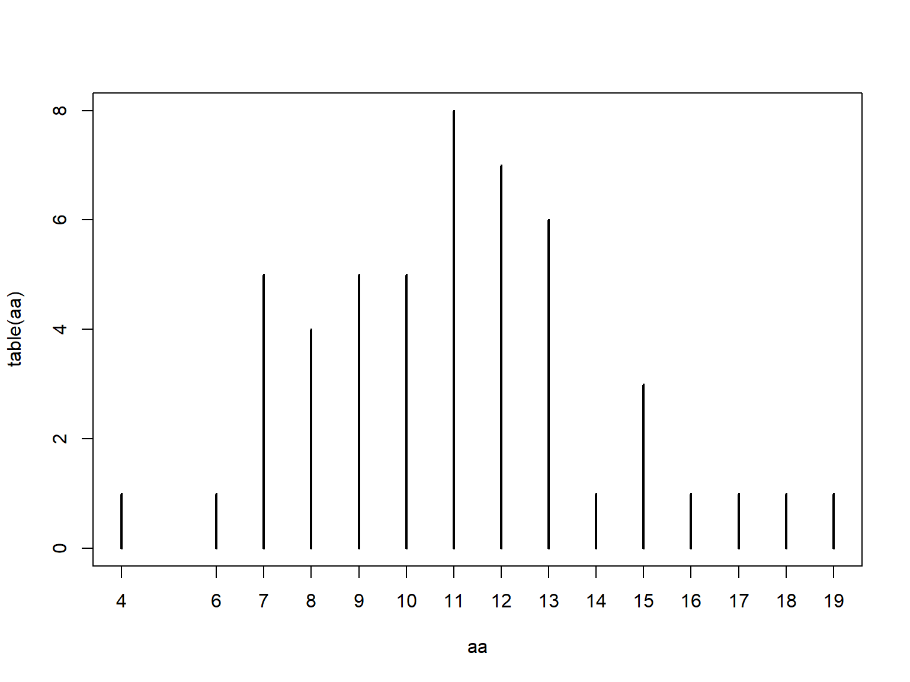

4.1 Descriptive and summary statistics
4.1.1 Basic summary statistics
One of the first steps in understanding your dataset is to summarize the values in each
variable. You can get a quick numerical summary of a vector or a dataset with summary(). The examples below use the built-in dataset iris.
summary(iris)## Sepal.Length Sepal.Width Petal.Length Petal.Width
## Min. :4.300 Min. :2.000 Min. :1.000 Min. :0.100
## 1st Qu.:5.100 1st Qu.:2.800 1st Qu.:1.600 1st Qu.:0.300
## Median :5.800 Median :3.000 Median :4.350 Median :1.300
## Mean :5.843 Mean :3.057 Mean :3.758 Mean :1.199
## 3rd Qu.:6.400 3rd Qu.:3.300 3rd Qu.:5.100 3rd Qu.:1.800
## Max. :7.900 Max. :4.400 Max. :6.900 Max. :2.500
## Species
## setosa :50
## versicolor:50
## virginica :50
##
##
## summary(iris$Petal.Length)## Min. 1st Qu. Median Mean 3rd Qu. Max.
## 1.000 1.600 4.350 3.758 5.100 6.900Function range() reports the minimum and maximum values in a vector. Like many of the functions for descriptive statistics, this function does not handle missing (NA) values by default. The argument na.rm=TRUE must be set if there are missing values.
range(iris$Petal.Length)## [1] 1.0 6.9# illustration of working with missing values
x <- c(rnorm(20), NA)
range(x)## [1] NA NArange(x, na.rm=TRUE)## [1] -2.714130 1.077231Central tendency can be estimated as the mean or median using eponymous functions. The mean is what most people refer to as the “average” in everyday conversation: the sum of values divided by the number of values. The mean is the value that values would be if they were all the same.
The median is the central value. If the values are sorted from smallest to greatest, the median is the value in the middle. I.e., half of the values are less than the median, and half are greater. This is also referred to as the “50th percentile” because 50% of values are \(\le\) the median.
For many datasets, the mean and median will be approximately the same. Data that are skewed will have a median different from their mean. Biologists typically summarize data using the mean, but median can be appropriate in some situations–especially when data are not normally distributed.
Like range, these functions for mean and median do not handle NA values unless you specify na.rm=TRUE.
a <- rnorm(50)
mean(a)## [1] 0.07336362median(a)## [1] 0.02716257Variance and standard deviation (SD) are calculated by var() and sd(). There is no built-in function for standard error (SE) so it must be calculated using the sample size (function length()). Note that you should very rarely compute and report SE because SD is more appropriate in almost every situation that is likely to come up.
a <- rnorm(50)
var(a)## [1] 1.148712sd(a)## [1] 1.07178sqrt(var(a)) # equivalent to sd(a)## [1] 1.07178# standard error of the mean
sd(a)/sqrt(length(a))## [1] 0.1515725Quantiles of data are calculated using the function quantile(). A quantile is a value in a distribution or sample such that some specified proportion of observations are less than or equal to that value. For example, the 0.5 quantile is the value such that half of values are less than or equal to that value. Quantiles are usually expressed either as proportions in [0, 1] or as percentiles in [0, 100]. R uses proportions, but you can always multiply by 100 to get percentiles.
Special quantiles are also available as their own functions: minimum min(), median median(), maximum max(), and interquartile range IQR(). Remember that argument na.rm is needed for many of these functions if there are missing values!
a <- rnorm(50)
# 20th percentile (aka: 1st quintile)
quantile(a, probs=0.2) ## 20%
## -0.4469422# 75th percentile (aka: 3rd quartile)
quantile(a, probs=0.75) ## 75%
## 0.6407535# 2.5 and 97.5 percentiles
# (i.e. 95% CI of a normal distribution)
quantile(a, probs=c(0.025, 0.975)) ## 2.5% 97.5%
## -1.780417 1.493172# minimum, or 0th percentile
min(a) ## [1] -2.178898# maximum, or 100th percentile
max(a)## [1] 1.7061# interquartile range (75th – 25th percentile)
IQR(a) ## [1] 1.008555# demonstration of na.rm
b <- c(a, NA)
min(b)## [1] NAmin(b,na.rm=TRUE)## [1] -2.1788984.1.2 Summarizing data with the apply() family
The apply() family is a group of functions that operate over the dimensions of an object. You can use the apply() family to summarize across rows or columns, or across elements of a list, and so on. The function used most often is apply(), which works on data frames, matrices and arrays. There are also lapply(), which works on lists and returns a list; sapply(), which operates on lists and returns the simplest object possible; and many others.
4.1.2.1 apply() for arrays and data frames
Function apply() works on arrays and data frames with \(\ge\) 2 dimensions. Its arguments are the object to be operated on, the margin (or dimension) on which to operate, and the operation (or function). The first margin is rows, the second is columns, and so on. The result of apply() will always have one fewer dimension than the input.
Some typical apply() commands are demonstrated below:
# test dataset with only numeric values
x <- iris[,1:4]
# margin 1 = rows --> row sums
apply(x, 1, sum)## [1] 10.2 9.5 9.4 9.4 10.2 11.4 9.7 10.1 8.9 9.6 10.8 10.0 9.3 8.5 11.2
## [16] 12.0 11.0 10.3 11.5 10.7 10.7 10.7 9.4 10.6 10.3 9.8 10.4 10.4 10.2 9.7
## [31] 9.7 10.7 10.9 11.3 9.7 9.6 10.5 10.0 8.9 10.2 10.1 8.4 9.1 10.7 11.2
## [46] 9.5 10.7 9.4 10.7 9.9 16.3 15.6 16.4 13.1 15.4 14.3 15.9 11.6 15.4 13.2
## [61] 11.5 14.6 13.2 15.1 13.4 15.6 14.6 13.6 14.4 13.1 15.7 14.2 15.2 14.8 14.9
## [76] 15.4 15.8 16.4 14.9 12.8 12.8 12.6 13.6 15.4 14.4 15.5 16.0 14.3 14.0 13.3
## [91] 13.7 15.1 13.6 11.6 13.8 14.1 14.1 14.7 11.7 13.9 18.1 15.5 18.1 16.6 17.5
## [106] 19.3 13.6 18.3 16.8 19.4 16.8 16.3 17.4 15.2 16.1 17.2 16.8 20.4 19.5 14.7
## [121] 18.1 15.3 19.2 15.7 17.8 18.2 15.6 15.8 16.9 17.6 18.2 20.1 17.0 15.7 15.7
## [136] 19.1 17.7 16.8 15.6 17.5 17.8 17.4 15.5 18.2 18.2 17.2 15.7 16.7 17.3 15.8# margin 2 = columns --> column sums
apply(x, 2, sum) # 2 = columns## Sepal.Length Sepal.Width Petal.Length Petal.Width
## 876.5 458.6 563.7 179.9The first apply() command above calculates the sum of values in each row (margin 1) of its input x. The second apply() command calculates the sum of values in each column (margin 2). The results are vectors whose lengths are the same as the corresponding dimension of the input (number of rows or columns).
The first commmand above is equivalent to:
y <- numeric(nrow(x))
for(i in 1:nrow(x)){y[i] <- sum(x[i,])}
# verify that results are the same:
all(apply(x, 1, sum) == y)## [1] TRUEBelow are some examples of calculations you can do with the apply() function. Notice that when the function to be applied takes its own arguments, those arguments are supplied following the function name, in the same order as they would be supplied to the function if used outside of apply().
# column minima
apply(x, 2, min)## Sepal.Length Sepal.Width Petal.Length Petal.Width
## 4.3 2.0 1.0 0.1# 75th percentile of each column
apply(x, 2, quantile, 0.75)## Sepal.Length Sepal.Width Petal.Length Petal.Width
## 6.4 3.3 5.1 1.8# interquartile range of each row
apply(x, 1, IQR)## [1] 2.800 2.375 2.550 2.300 2.850 2.900 2.575 2.625 2.175 2.400 2.950 2.500
## [13] 2.375 2.475 3.500 3.500 3.200 2.775 2.925 2.925 2.575 2.825 3.050 2.350
## [25] 2.275 2.250 2.500 2.750 2.750 2.325 2.275 2.675 3.225 3.425 2.375 2.700
## [37] 2.975 2.850 2.325 2.650 2.825 1.800 2.475 2.525 2.600 2.325 2.875 2.450
## [49] 2.925 2.625 2.525 2.200 2.700 2.325 2.600 2.375 2.225 1.650 2.600 1.850
## [61] 2.125 2.000 2.600 2.525 1.600 2.300 2.150 2.250 2.900 2.175 2.225 2.100
## [73] 3.000 2.650 2.325 2.350 2.850 2.750 2.325 1.850 2.150 2.100 2.050 2.900
## [85] 2.100 1.925 2.500 2.825 1.900 2.175 2.425 2.375 2.200 1.750 2.200 2.025
## [97] 2.075 2.275 1.375 2.075 2.975 2.775 3.425 3.150 3.175 4.075 2.300 3.925
## [109] 3.700 3.050 2.550 3.075 3.050 2.800 2.575 2.600 3.050 3.550 4.575 3.225
## [121] 3.025 2.475 4.350 2.775 2.950 3.450 2.600 2.500 3.175 3.500 3.850 3.425
## [133] 3.150 2.925 3.425 3.675 2.625 2.950 2.400 2.925 2.950 2.650 2.775 3.150
## [145] 2.850 2.750 2.975 2.775 2.475 2.600Arrays with >2 dimensions can have functions applied across multiple dimensions:
# object with 3 rows, 2 columns, and 3 "layers":
x <- array(1:18, dim=c(3,2,3))
# how many dimensions does the result have?
apply(x, c(1,2), sum)## [,1] [,2]
## [1,] 21 30
## [2,] 24 33
## [3,] 27 36You can also write custom functions and apply them to rows or columns. Below are some useful functions to apply. These functions can be defined inside apply() or outside apply(). Each of the functions below takes an input called x, but this is not as the x that is the input to apply(). The x in function(x) is used inside the braces {} as the name for the input passed from apply() to the inner function.
x <- iris[,1:4]
# count values > 2
apply(x, 2, function(x){length(which(x > 2))})## Sepal.Length Sepal.Width Petal.Length Petal.Width
## 150 149 100 23# count missing (NA) values
apply(x, 2, function(x){length(which(is.na(x)))})## Sepal.Length Sepal.Width Petal.Length Petal.Width
## 0 0 0 0# count non-missing values
count.nonmissing <- function(x){length(which(!is.na(x)))}
apply(x, 2, count.nonmissing)## Sepal.Length Sepal.Width Petal.Length Petal.Width
## 150 150 150 1504.1.2.2 lapply() and sapply() for lists and other objects
The other members of the apply() family that are most often used are lapply() and sapply().
lapply(), operates on lists and returns a list. Short for “list apply”, and usually pronounced “el apply” or “lap-lie”.sapply()operates on many object types (including lists) and returns the simplest object possible. Short for “simplify apply”, and usually pronounced “ess apply” or “sap-lie”. Usually the goal withsapply()is to get a vector or matrix out of a list.
The code block below makes a list called mylist and illustrates the use of lapply() and sapply().
mylist <- vector("list", 5)
for(i in 1:length(mylist)){
x <- rnorm(20)
mylist[[i]] <- t.test(x)
}#i
# get estimated mean of each element of mylist, in a list
lapply(mylist, function(x){x$estimate})## [[1]]
## mean of x
## -0.2686405
##
## [[2]]
## mean of x
## -0.203565
##
## [[3]]
## mean of x
## 0.09948298
##
## [[4]]
## mean of x
## -0.04637868
##
## [[5]]
## mean of x
## 0.1247556# get estimated mean of each element, simplified to vector
sapply(mylist, function(x){x$estimate})## mean of x mean of x mean of x mean of x mean of x
## -0.26864053 -0.20356498 0.09948298 -0.04637868 0.12475562The function lapply() can sometimes be combined with do.call() to produce similar outputs as sapply():
do.call(c, lapply(mylist, function(x){x$estimate}))## mean of x mean of x mean of x mean of x mean of x
## -0.26864053 -0.20356498 0.09948298 -0.04637868 0.124755624.1.3 Tabulation and aggregation
4.1.3.1 Tabulation of a single variable
The table() function tallies the occurrences of each unique value in a vector. Notice that table() only returns a result for the values that actually occur in the input.
aa <- rpois(50,10) # Random Poisson distribution
table(aa)## aa
## 4 6 7 8 9 10 11 12 13 14 15 16 17 18 19
## 1 1 5 4 5 5 8 7 6 1 3 1 1 1 1If you need a count that includes 0s for missing values, there are a few ways to do this. My preferred solution is to use the custom function below. This function counts how many times each value in values occurs in input.
table.all <- function(input, values){
res <- sapply(values,
function(x){length(which(input == x))})
names(res) <- as.character(values)
return(res)
}
# use with random poisson values:
x1 <- rpois(20, 10)
table.all(x1, 0:30)## 0 1 2 3 4 5 6 7 8 9 10 11 12 13 14 15 16 17 18 19 20 21 22 23 24 25
## 0 0 0 0 0 1 4 1 1 3 0 2 1 2 2 2 1 0 0 0 0 0 0 0 0 0
## 26 27 28 29 30
## 0 0 0 0 0# compare to:
table(x1)## x1
## 5 6 7 8 9 11 12 13 14 15 16
## 1 4 1 1 3 2 1 2 2 2 1If you plot a table() result, you get a sort of bar graph. This is similar to what you get with a command like plot(...,type = "h")30.
plot(table(aa))
4.1.3.2 Cross-tabulation (aka: frequency tables)
Contingency tables, or frequency tables are calculated with ftable(). This function counts the number of values in each combination of different factors. The example below uses the built-in dataset iris modified to have some additional factors.
set.seed(123)
x <- iris
x$color <- c("purple", "white")
x$bloom <- sample(c("early", "late"), nrow(x), replace=TRUE)
handed.table <- ftable(x$color~x$bloom)
handed.table## x$color purple white
## x$bloom
## early 39 37
## late 36 38Contingency tables produced by ftable() can be used directly for chi-squared (\(\chi^2\)) tests:
chisq.test(handed.table)##
## Pearson's Chi-squared test with Yates' continuity correction
##
## data: handed.table
## X-squared = 0.026671, df = 1, p-value = 0.8703The function ftable() also has a formula interface, much like many statistical functions (e.g., lm()). This is useful if you want more complicated tables or more combinations of categories. Notice that the order of variables affects the structure of the resulting table. The 6 commands below produce equivalent tables, but the results are organized differently.
ftable(x$Species~x$color+x$bloom)## x$Species setosa versicolor virginica
## x$color x$bloom
## purple early 17 13 9
## late 8 12 16
## white early 13 14 10
## late 12 11 15ftable(x$Species~x$bloom+x$color)## x$Species setosa versicolor virginica
## x$bloom x$color
## early purple 17 13 9
## white 13 14 10
## late purple 8 12 16
## white 12 11 15ftable(x$color~x$Species+x$bloom)## x$color purple white
## x$Species x$bloom
## setosa early 17 13
## late 8 12
## versicolor early 13 14
## late 12 11
## virginica early 9 10
## late 16 15ftable(x$color~x$bloom+x$Species)## x$color purple white
## x$bloom x$Species
## early setosa 17 13
## versicolor 13 14
## virginica 9 10
## late setosa 8 12
## versicolor 12 11
## virginica 16 15ftable(x$bloom~x$color+x$Species)## x$bloom early late
## x$color x$Species
## purple setosa 17 8
## versicolor 13 12
## virginica 9 16
## white setosa 13 12
## versicolor 14 11
## virginica 10 15ftable(x$bloom~x$Species+x$color)## x$bloom early late
## x$Species x$color
## setosa purple 17 8
## white 13 12
## versicolor purple 13 12
## white 14 11
## virginica purple 9 16
## white 10 15Variables on the left side of the ~ will be on the top of the table, and variables on the right side of the ~ will be on the left side of the table31. On each side, variables are ordered in reverse order from the table matrix outwards. Compare the results of these commands:
ftable(x$Species~x$color+x$bloom)## x$Species setosa versicolor virginica
## x$color x$bloom
## purple early 17 13 9
## late 8 12 16
## white early 13 14 10
## late 12 11 15ftable(x$Species~x$bloom+x$color)## x$Species setosa versicolor virginica
## x$bloom x$color
## early purple 17 13 9
## white 13 14 10
## late purple 8 12 16
## white 12 11 15The output of ftable() is of class ftable, which looks like a matrix or data frame but does not function like one. Sometimes it is necessary to convert an ftable() output to different class in order to pull values from it. This can be done with base R conversion functions. Notice that the data frame form of handed.table resembles the “long” data format we discussed in module 3.
handed.table <- ftable(x$Species~x$color)
as.matrix(handed.table)## x$Species
## x$color setosa versicolor virginica
## purple 25 25 25
## white 25 25 25as.data.frame(handed.table)## x.color x.Species Freq
## 1 purple setosa 25
## 2 white setosa 25
## 3 purple versicolor 25
## 4 white versicolor 25
## 5 purple virginica 25
## 6 white virginica 254.1.4 Aggregation (aka: pivot tables)
One of the most common data operations is aggregation, or summarization by groups. In Excel, this is done using Pivot Tables. In R, the function aggregate() is used for pivot table-like functionality. But, as we shall see, the R aggregate() function is much more powerful than an Excel pivot table. The tidyverse equivalent is dplyr::summarise().

The most important inputs to aggregate() are the data to be summarized, the variable or variables that define the groups, and the function to summarize by. The examples below shows how to calculate the mean petal length for each species in the iris dataset. If the variable to be summarized and the grouping variables are in the same data frame (which is usually the case), you can use the formula interface to aggregate(); otherwise, use the by= interface.
# example using by=
aggregate(iris$Petal.Length,
by=list(iris$Species),
mean)## Group.1 x
## 1 setosa 1.462
## 2 versicolor 4.260
## 3 virginica 5.552# better method using formula
aggregate(Petal.Length~Species,
data=iris,
mean)## Species Petal.Length
## 1 setosa 1.462
## 2 versicolor 4.260
## 3 virginica 5.552The formula interface is cleaner and easier than the by= interface (first example), and has the key advantage that it automatically passes variable names to the result. If you use by= you may want to rename the columns in the result.
In my own code I prefer to name my aggregation tables agg, with additional parts like agg1, agg.fish, and so on if needed. Function aggregate() produces a data frame with a column for each grouping variable (Group.1, Group.2 and so on) and a single column x containing the summarized values. We can use this property to construct more complicated tables:
x <- iris
# add another grouping variable
x$color <- c("red", "white")
# by= example: notice how columns in result need to be renamed
agg <- aggregate(x$Petal.Length,
by=list(x$Species, x$color),
mean)
agg## Group.1 Group.2 x
## 1 setosa red 1.456
## 2 versicolor red 4.308
## 3 virginica red 5.564
## 4 setosa white 1.468
## 5 versicolor white 4.212
## 6 virginica white 5.540# change column names
names(agg) <- c("spp", "color", "mean")
agg## spp color mean
## 1 setosa red 1.456
## 2 versicolor red 4.308
## 3 virginica red 5.564
## 4 setosa white 1.468
## 5 versicolor white 4.212
## 6 virginica white 5.540# formula example: much easier
agg <- aggregate(Petal.Length~Species+color, data=x, mean)
agg## Species color Petal.Length
## 1 setosa red 1.456
## 2 versicolor red 4.308
## 3 virginica red 5.564
## 4 setosa white 1.468
## 5 versicolor white 4.212
## 6 virginica white 5.540Notice that in agg the values are sorted by the grouping variables from right to left: in this example, by color, then Species. This is the reverse of the order in the original command. The result of aggregate() is a data frame, so data within it can be rearranged using order().
Often we want to summarize a variable by multiple functions–for example, to get a table with the mean and SD in each group. The way to do this is to use several aggregate() commands, and then combine the results. The examples below shows two ways to construct a table with the mean and SD of a variable.
# define a formula and save some typing:
f1 <- formula(Petal.Length~Species)
# method 1: single table
agg <- aggregate(f1, data=x, mean)
agg$sd <- aggregate(f1, data=x, sd)$Petal.Length
names(agg)[which(names(agg) == "Petal.Length")] <- "mn"
agg## Species mn sd
## 1 setosa 1.462 0.1736640
## 2 versicolor 4.260 0.4699110
## 3 virginica 5.552 0.5518947The $Petal.Length on the end of aggregate() is important because we want only column Petal.Length of the output. Without $Petal.Length, the result will be messy when we try to add it to agg. If you ever want to do this with the by= method, the column of the output containing the summarized values will be named x.
# method 1: single table, with by=
agg <- aggregate(iris$Petal.Length, by=list(iris$Species), mean)
## note use of $x:
agg$sd <- aggregate(iris$Petal.Length, by=list(iris$Species), sd)$x
# change names in result:
names(agg)[which(names(agg) == "x")] <- "mn"
names(agg)[which(names(agg) == "Group.1")] <- "species"
agg## species mn sd
## 1 setosa 1.462 0.1736640
## 2 versicolor 4.260 0.4699110
## 3 virginica 5.552 0.5518947The second approach is to make several aggregate() tables, and combine them into a single result.
# method 2: multiple tables
# (note: there are lots of ways to do this)
agg.mn <- aggregate(f1, data=x, mean)
agg.sd <- aggregate(f1, data=x, sd)
agg <- data.frame(agg.mn, sd=agg.sd$Petal.Length)
names(agg)[2] <- "mn"
agg## Species mn sd
## 1 setosa 1.462 0.1736640
## 2 versicolor 4.260 0.4699110
## 3 virginica 5.552 0.5518947If you’ve ever used Excel Pivot Tables, you will have noticed that data can only be summarized by a limited set of functions. On the other hand, aggregate() can be used with pretty much any function that takes in a vector and returns a scalar. You can even write your own functions! Below are some examples. Notice in the first example that arguments to the summarizing function follow its name.
# first quartile (25th percentile)
aggregate(Petal.Length~Species, data=x, quantile, 0.25)## Species Petal.Length
## 1 setosa 1.4
## 2 versicolor 4.0
## 3 virginica 5.1# number of values
aggregate(Petal.Length~Species, data=x, length)## Species Petal.Length
## 1 setosa 50
## 2 versicolor 50
## 3 virginica 50The following examples illustrate anonymous functions: functions defined within another function and never defined in the R environment. The x in function(x) is taken to be the values within each group defined by the variable(s) on the right-hand side of ~ or in by=. Notice that the end of such a command will need a lot of ), }, and sometimes ]. Using an editor with syntax highlighting is very helpful!
# number of missing values
aggregate(Petal.Length~Species,
data=x,
function(x){length(which(is.na(x)))})## Species Petal.Length
## 1 setosa 0
## 2 versicolor 0
## 3 virginica 0# number of non-missing values
aggregate(Petal.Length~Species,
data=x,
function(x){length(which(!is.na(x)))})## Species Petal.Length
## 1 setosa 50
## 2 versicolor 50
## 3 virginica 50# number of values >= 2
aggregate(Petal.Length~Species,
data=x,
function(x){length(which(x >= 2))})## Species Petal.Length
## 1 setosa 0
## 2 versicolor 50
## 3 virginica 50# number of UNIQUE values >= 2
aggregate(Petal.Length~Species,
data=x,
function(x){length(unique(x[which(x >= 2)]))})## Species Petal.Length
## 1 setosa 0
## 2 versicolor 19
## 3 virginica 20Being able to use almost any function, and to define your own functions, makes aggregate() an immensely powerful tool to have in your R toolbox.